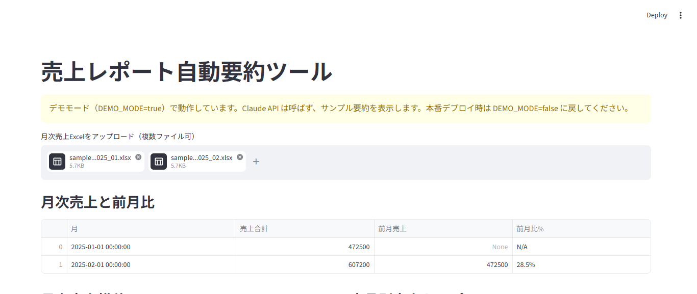
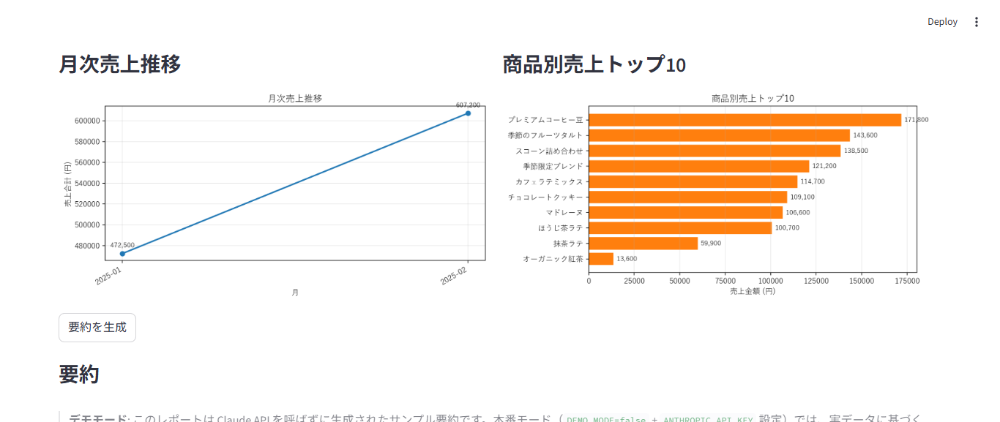
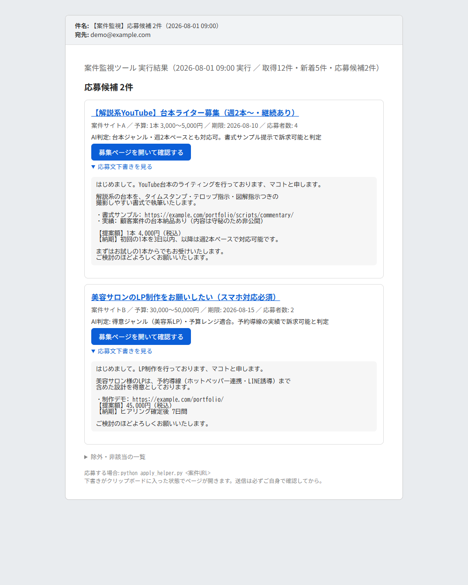
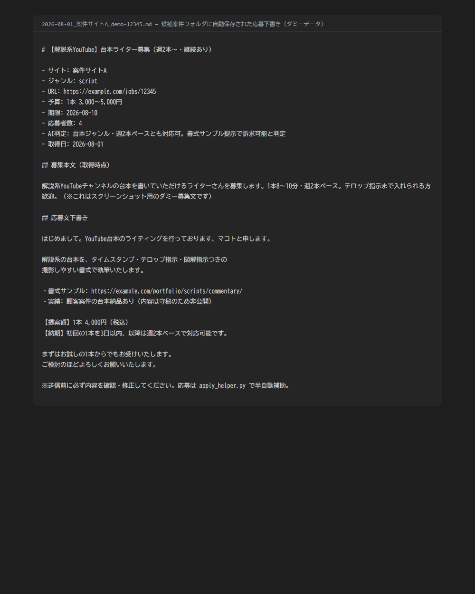

案件の一次判定
JOB SCREEN
募集文を渡すと、受けられない領域・断る条件・勧誘の疑いを機械照合して、根拠となる検出箇所つきで返します。単語1個で断定せず、文脈が要る語は「原文を確認」として分けて返す設計です。
AUTOMATION TOOLS


画面はサンプルの売上データ（架空の商品・数値）を読み込ませたものです。
EXCEL AUTO SUMMARY
月次売上Excelを複数アップロードすると、自動で合計・前月比・商品別ランキングを集計してグラフ化し、AI要約コメント付きのExcel／PDFレポートを出力します。毎月のレポート作成を「ファイルを置くだけ」にするツールです。
同じ集計・転記の自動化を .xlsm（Excelマクロ／VBA）で組むことも可能です。お使いの環境に合わせて実装方法をご提案します。


画面は架空の募集・架空のURLで生成した通知サンプルです。
JOB MONITOR
案件サイトの公開ページを低頻度で自動巡回し、条件に合う新着案件だけをAIで選別して、応募文の下書き付きでメール通知します。候補はファイルにも自動保存され、見逃しと手動チェックの手間をなくします。
「毎日見に行く」「毎回コピペする」型の繰り返し作業は、この形の自動化に置き換えられます。Excel/VBAでの定型処理の自動化もご相談ください。
Cloudflare Workers 上で動かしている自作のリモートMCPサーバーです。ChatGPTやClaudeなどのAIに登録しておくと、AIが会話の途中でこのツールを呼び出し、機械が判定した結果を返します。人が毎回チェックしていた作業を、AI側の手順に組み込む形の自動化です。（URLは認証用の文字列を含むため非公開）
JOB SCREEN
募集文を渡すと、受けられない領域・断る条件・勧誘の疑いを機械照合して、根拠となる検出箇所つきで返します。単語1個で断定せず、文脈が要る語は「原文を確認」として分けて返す設計です。
LP CHECK
HTMLを渡すと、制作途中の残骸やAPIキーの混入、リンク切れ、メタ情報の不足、表現のリスクを検出します。あわせてPC 1280pxとスマホ 375pxで実際に描画し、画面幅からのはみ出しや画像のつぶれ、文字の重なりをスクリーンショット付きで返します。
LP ESTIMATE
プラン・業種・オプションを選ぶと、明細・合計・納期目安・含まないものまでを自動で組み立てます。価格表のデータだけを差し替えれば計算側を触らずに改定できる作りで、矛盾する入力では金額を出さずにエラーを返します。
同じ形で、社内の判断基準やチェック項目を「AIが呼べる道具」にできます。判断基準はデータファイル1枚にまとめてあるので、運用しながら基準だけを更新していけます。
掲載しているのは自主制作・自家用として運用中のツールです。ご依頼の際は、業務内容をヒアリングのうえ「何分の手作業が何秒になるか」から一緒に整理してご提案します。